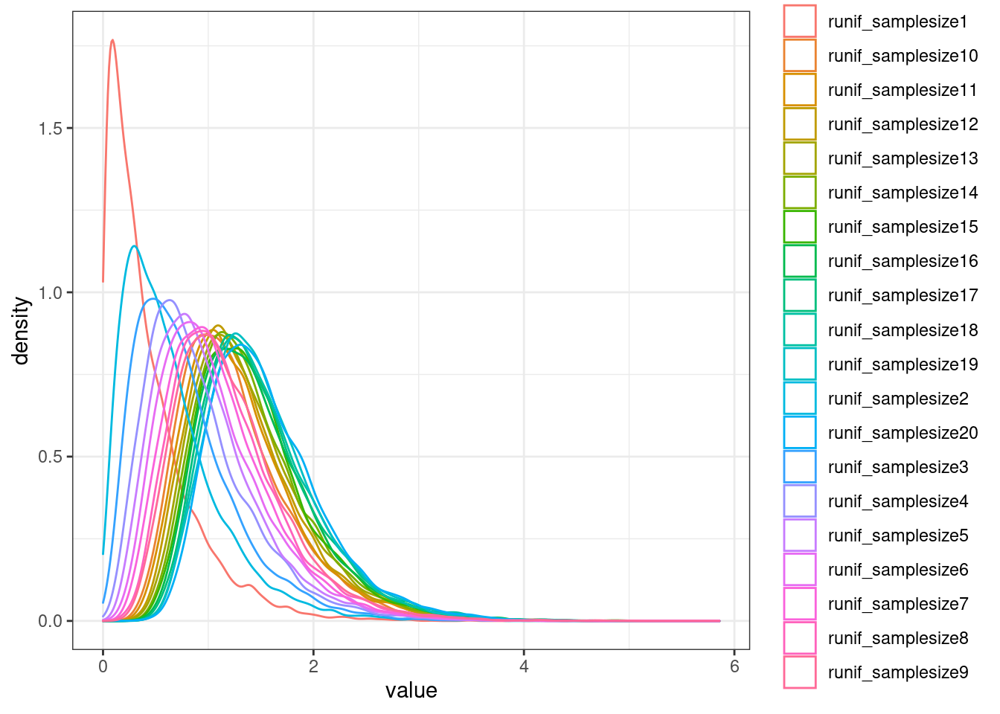
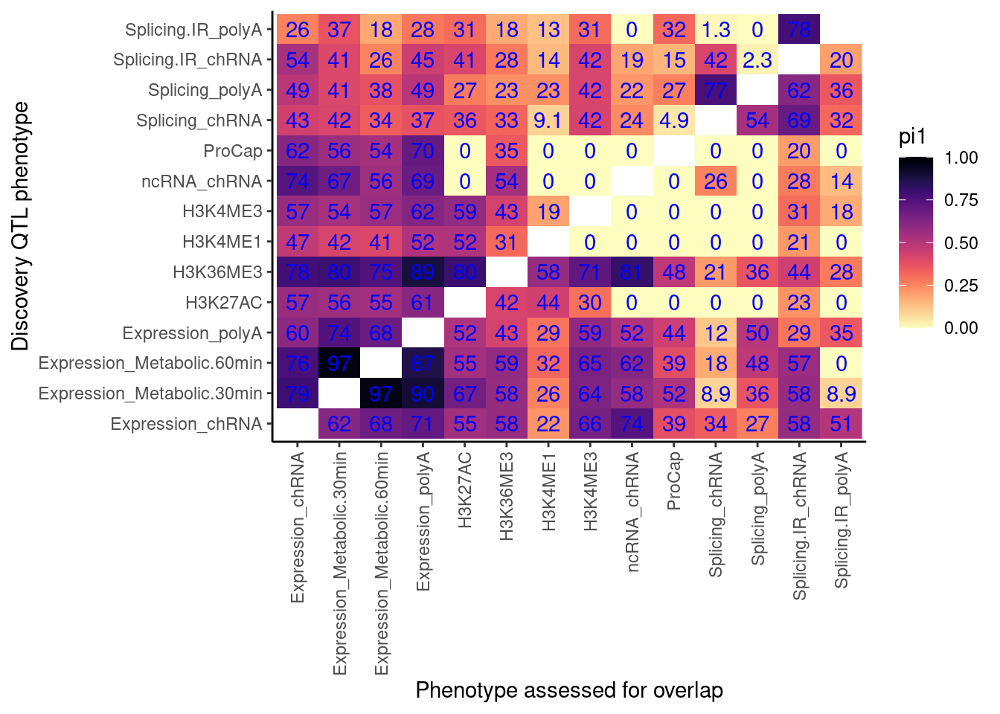
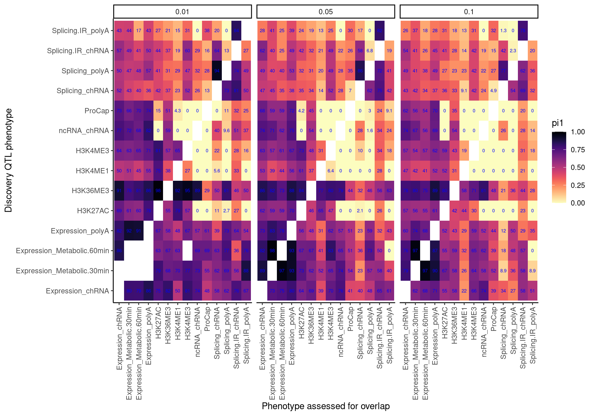
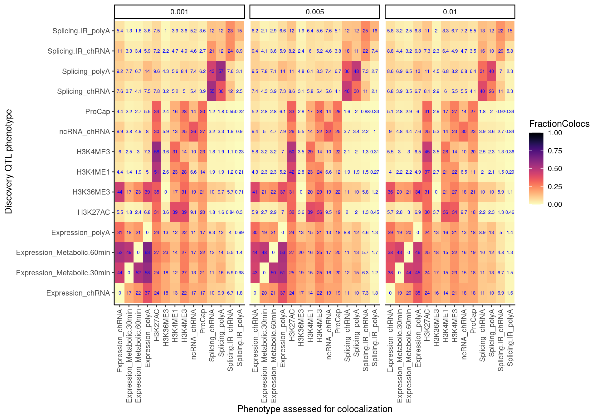
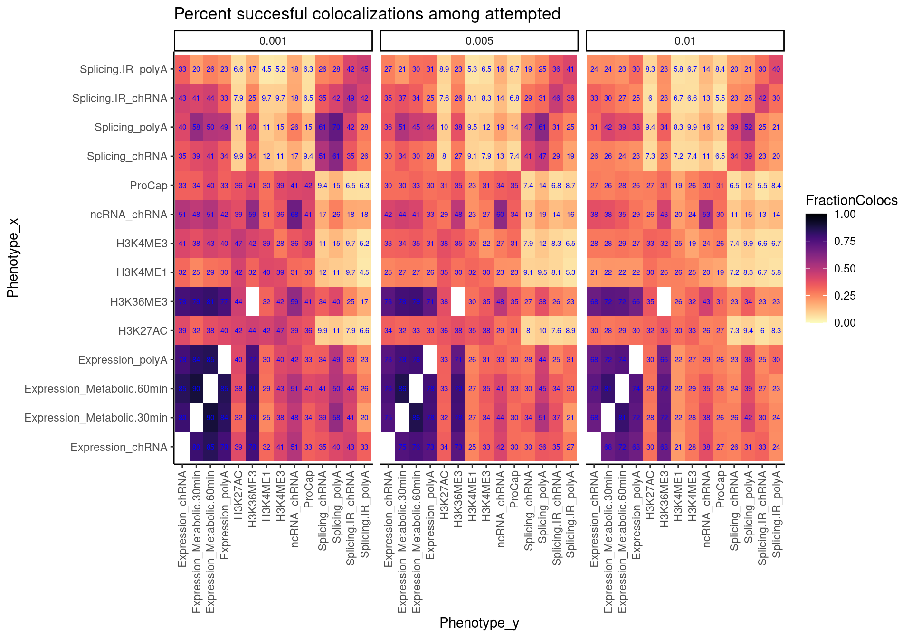
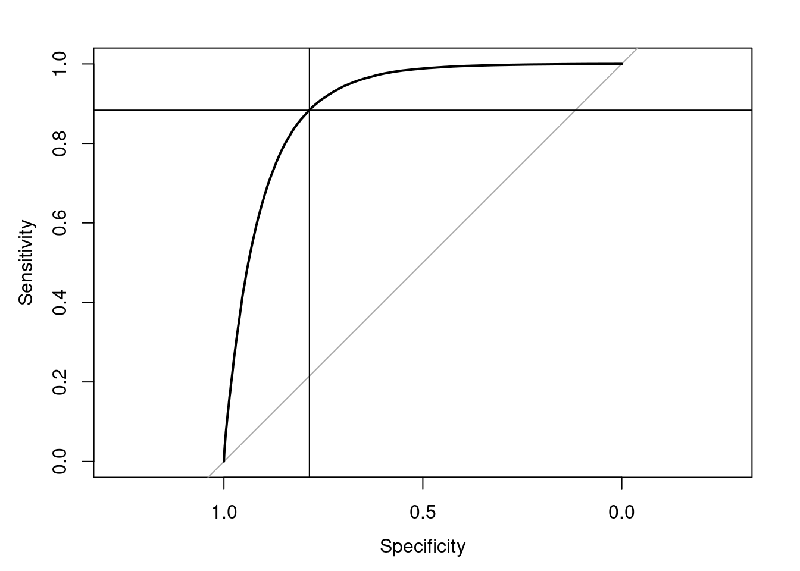
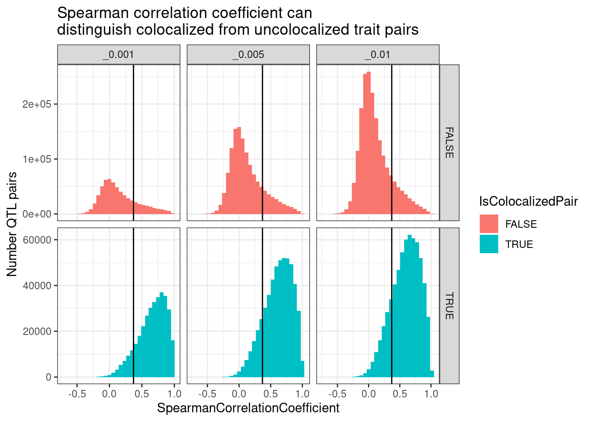
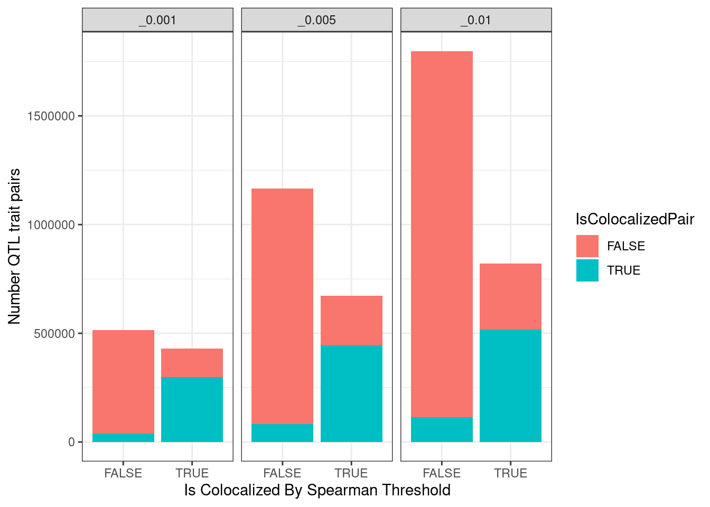
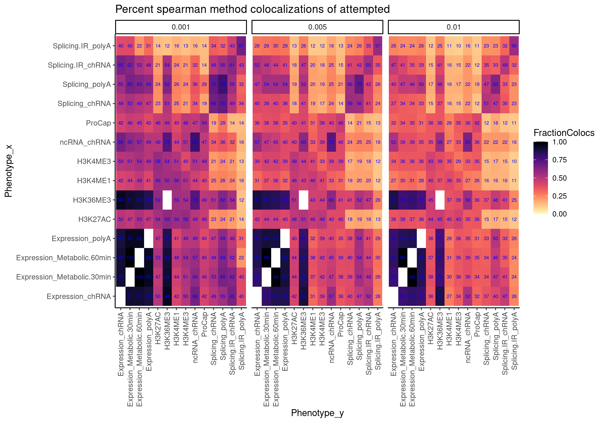
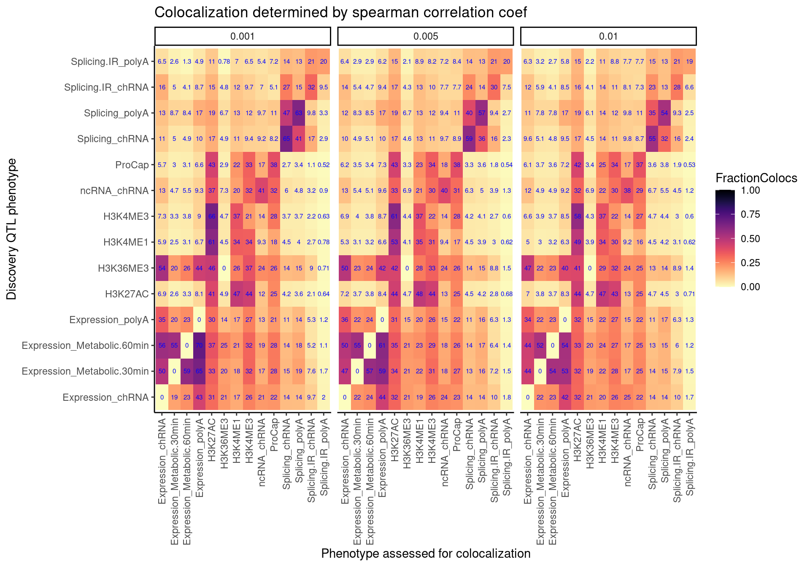

Last updated: 2022-07-13
Checks: 6 1
Knit directory: ChromatinSplicingQTLs/analysis/
This reproducible R Markdown analysis was created with workflowr (version 1.6.2). The Checks tab describes the reproducibility checks that were applied when the results were created. The Past versions tab lists the development history.
The R Markdown is untracked by Git. To know which version of the R Markdown file created these results, you’ll want to first commit it to the Git repo. If you’re still working on the analysis, you can ignore this warning. When you’re finished, you can run wflow_publish to commit the R Markdown file and build the HTML.
Great job! The global environment was empty. Objects defined in the global environment can affect the analysis in your R Markdown file in unknown ways. For reproduciblity it’s best to always run the code in an empty environment.
The command set.seed(20191126) was run prior to running the code in the R Markdown file. Setting a seed ensures that any results that rely on randomness, e.g. subsampling or permutations, are reproducible.
Great job! Recording the operating system, R version, and package versions is critical for reproducibility.
Nice! There were no cached chunks for this analysis, so you can be confident that you successfully produced the results during this run.
Great job! Using relative paths to the files within your workflowr project makes it easier to run your code on other machines.
Great! You are using Git for version control. Tracking code development and connecting the code version to the results is critical for reproducibility.
The results in this page were generated with repository version 15032a4. See the Past versions tab to see a history of the changes made to the R Markdown and HTML files.
Note that you need to be careful to ensure that all relevant files for the analysis have been committed to Git prior to generating the results (you can use wflow_publish or wflow_git_commit). workflowr only checks the R Markdown file, but you know if there are other scripts or data files that it depends on. Below is the status of the Git repository when the results were generated:
Ignored files:
Ignored: .DS_Store
Ignored: .Rhistory
Ignored: .Rproj.user/
Ignored: analysis/.Rhistory
Ignored: code/.DS_Store
Ignored: code/.RData
Ignored: code/._.DS_Store
Ignored: code/._README.md
Ignored: code/._report.html
Ignored: code/.ipynb_checkpoints/
Ignored: code/.snakemake/
Ignored: code/Alignments/
Ignored: code/ENCODE/
Ignored: code/ExpressionAnalysis/
Ignored: code/FastqFastp/
Ignored: code/FastqFastpSE/
Ignored: code/Genotypes/
Ignored: code/IntronSlopes/
Ignored: code/Misc/
Ignored: code/MiscCountTables/
Ignored: code/Multiqc/
Ignored: code/Multiqc_chRNA/
Ignored: code/PeakCalling/
Ignored: code/Phenotypes/
Ignored: code/PlotGruberQTLs/
Ignored: code/PlotQTLs/
Ignored: code/ProCapAnalysis/
Ignored: code/QC/
Ignored: code/QTLs/
Ignored: code/ReferenceGenome/
Ignored: code/Rplots.pdf
Ignored: code/Session.vim
Ignored: code/SplicingAnalysis/
Ignored: code/TODO
Ignored: code/Tehranchi/
Ignored: code/bigwigs/
Ignored: code/bigwigs_FromNonWASPFilteredReads/
Ignored: code/config/.DS_Store
Ignored: code/config/._.DS_Store
Ignored: code/config/.ipynb_checkpoints/
Ignored: code/debug.ipynb
Ignored: code/debug_python.ipynb
Ignored: code/deepTools/
Ignored: code/featureCounts/
Ignored: code/gwas_summary_stats/
Ignored: code/hyprcoloc/
Ignored: code/igv_session.xml
Ignored: code/logs/
Ignored: code/notebooks/.ipynb_checkpoints/
Ignored: code/rules/.CalculatePi1.smk.swp
Ignored: code/rules/.ipynb_checkpoints/
Ignored: code/rules/OldRules/
Ignored: code/rules/notebooks/
Ignored: code/scratch/
Ignored: code/scripts/.ipynb_checkpoints/
Ignored: code/scripts/GTFtools_0.8.0/
Ignored: code/scripts/__pycache__/
Ignored: code/scripts/liftOverBedpe/liftOverBedpe.py
Ignored: code/snakemake.log
Ignored: code/snakemake.sbatch.log
Ignored: data/.DS_Store
Ignored: data/._.DS_Store
Ignored: data/._20220414203249_JASPAR2022_combined_matrices_25818_jaspar.txt
Ignored: data/GWAS_catalog_summary_stats_sources/._list_gwas_summary_statistics_6_Apr_2022-10.csv
Ignored: data/GWAS_catalog_summary_stats_sources/._list_gwas_summary_statistics_6_Apr_2022-11.csv
Ignored: data/GWAS_catalog_summary_stats_sources/._list_gwas_summary_statistics_6_Apr_2022-2.csv
Ignored: data/GWAS_catalog_summary_stats_sources/._list_gwas_summary_statistics_6_Apr_2022-3.csv
Ignored: data/GWAS_catalog_summary_stats_sources/._list_gwas_summary_statistics_6_Apr_2022-4.csv
Ignored: data/GWAS_catalog_summary_stats_sources/._list_gwas_summary_statistics_6_Apr_2022-5.csv
Ignored: data/GWAS_catalog_summary_stats_sources/._list_gwas_summary_statistics_6_Apr_2022-6.csv
Ignored: data/GWAS_catalog_summary_stats_sources/._list_gwas_summary_statistics_6_Apr_2022-7.csv
Ignored: data/GWAS_catalog_summary_stats_sources/._list_gwas_summary_statistics_6_Apr_2022-8.csv
Ignored: data/GWAS_catalog_summary_stats_sources/._list_gwas_summary_statistics_6_Apr_2022.csv
Untracked files:
Untracked: analysis/20220713_PlotHeatmapManyWays.Rmd
Untracked: code/snakemake_profiles/slurm/__pycache__/
Untracked: output/hyprcoloc_results/ForColoc/MolColocStandard/pairwisecor.txt.gz
Untracked: output/hyprcoloc_results/ForColoc/MolColocTest_001/pairwisecor.txt.gz
Untracked: output/hyprcoloc_results/ForColoc/MolColocTest_005/pairwisecor.txt.gz
Untracked: output/hyprcoloc_results/ForColoc/MolColocTest_01/pairwisecor.txt.gz
Untracked: output/hyprcoloc_results/ForColoc/MolColocTesteQTL_001/pairwisecor.txt.gz
Untracked: output/hyprcoloc_results/ForColoc/MolColocTesteQTL_005/pairwisecor.txt.gz
Untracked: output/hyprcoloc_results/ForColoc/MolColocTesteQTL_01/pairwisecor.txt.gz
Unstaged changes:
Modified: code/scripts/GenometracksByGenotype
Modified: data/Phenotypes_recode_for_Plotting.txt
Modified: output/hyprcoloc_results/ForColoc/MolColocStandard/hyprcoloc.results.OnlyColocalized.Stats.txt.gz
Modified: output/hyprcoloc_results/ForColoc/MolColocStandard/hyprcoloc.results.txt.gz
Modified: output/hyprcoloc_results/ForColoc/MolColocStandard/snpscores.txt.gz
Modified: output/hyprcoloc_results/ForColoc/MolColocTest_001/hyprcoloc.results.OnlyColocalized.Stats.txt.gz
Modified: output/hyprcoloc_results/ForColoc/MolColocTest_001/hyprcoloc.results.txt.gz
Modified: output/hyprcoloc_results/ForColoc/MolColocTest_001/snpscores.txt.gz
Modified: output/hyprcoloc_results/ForColoc/MolColocTest_005/hyprcoloc.results.OnlyColocalized.Stats.txt.gz
Modified: output/hyprcoloc_results/ForColoc/MolColocTest_005/hyprcoloc.results.txt.gz
Modified: output/hyprcoloc_results/ForColoc/MolColocTest_005/snpscores.txt.gz
Modified: output/hyprcoloc_results/ForColoc/MolColocTest_01/hyprcoloc.results.OnlyColocalized.Stats.txt.gz
Modified: output/hyprcoloc_results/ForColoc/MolColocTest_01/hyprcoloc.results.txt.gz
Modified: output/hyprcoloc_results/ForColoc/MolColocTest_01/snpscores.txt.gz
Modified: output/hyprcoloc_results/ForColoc/MolColocTesteQTL_001/hyprcoloc.results.OnlyColocalized.Stats.txt.gz
Modified: output/hyprcoloc_results/ForColoc/MolColocTesteQTL_001/hyprcoloc.results.txt.gz
Modified: output/hyprcoloc_results/ForColoc/MolColocTesteQTL_001/snpscores.txt.gz
Modified: output/hyprcoloc_results/ForColoc/MolColocTesteQTL_005/hyprcoloc.results.OnlyColocalized.Stats.txt.gz
Modified: output/hyprcoloc_results/ForColoc/MolColocTesteQTL_005/hyprcoloc.results.txt.gz
Modified: output/hyprcoloc_results/ForColoc/MolColocTesteQTL_005/snpscores.txt.gz
Modified: output/hyprcoloc_results/ForColoc/MolColocTesteQTL_01/hyprcoloc.results.OnlyColocalized.Stats.txt.gz
Modified: output/hyprcoloc_results/ForColoc/MolColocTesteQTL_01/hyprcoloc.results.txt.gz
Modified: output/hyprcoloc_results/ForColoc/MolColocTesteQTL_01/snpscores.txt.gz
Note that any generated files, e.g. HTML, png, CSS, etc., are not included in this status report because it is ok for generated content to have uncommitted changes.
There are no past versions. Publish this analysis with wflow_publish() to start tracking its development.
I’ve been making heatmaps to communicate the fraction of xQTLs (eg eQTLs/sQTLs/chromatinQTLs) that colocalize with yQTLs. There are many slightly different methods I’ve been using to make this heatmap, with slightly different interpretations. In this notebook, I will make lots of those heatmaps to compare the different methods.
Here is a list of the different methods I have been using, with the names I am calling these methods. Note that for all of these methods I can consider using different statistical thresholds for calling something a QTL, so in this notebook I’ll explore that too.
library(tidyverse)
library(viridis)
library(gplots)
library(data.table)
library(qvalue)
library(purrr)
library(GGally)
library(pROC)
CalculatePi1 <- function (dat.in) {
return(tryCatch(1-qvalue(dat.in$Pvals.For.Pi1)$pi0, error=function(e) NULL))
}First let’s read in data for Pi1 method
FilesChunks <- paste0("../code/scratch/PairwisePi1Traits.P.", 1:10, ".txt.gz")
dat <- lapply(FilesChunks, fread, sep='\t') %>%
bind_rows()
RecodeDat <- read_tsv("../data/Phenotypes_recode_for_Plotting.txt")
RecodeVec <- RecodeDat %>%
select(PC, ShorterAlias) %>%
deframe()
RecodeIncludePCs <- RecodeDat %>%
filter(Include) %>%
pull(PC)
colnames(dat) [1] "PC1" "P1"
[3] "GeneLocus" "p_permutation.x"
[5] "singletrait_topvar.x" "singletrait_topvar_chr.x"
[7] "singletrait_topvar_pos.x" "FDR.x"
[9] "PC2" "P2"
[11] "p_permutation.y" "singletrait_topvar.y"
[13] "singletrait_topvar_chr.y" "singletrait_topvar_pos.y"
[15] "FDR.y" "trait.x.p.in.y" I also need to simulate the null distribution to deal with the one to many problem…
MaxSampleSizeToCreateANull <- 100
NSamplesToEstimateDistribution <- 10000
NullSimulatedTestStats <- matrix(nrow=MaxSampleSizeToCreateANull, ncol=NSamplesToEstimateDistribution)
rownames(NullSimulatedTestStats) <- paste0("runif_samplesize", 1:MaxSampleSizeToCreateANull)
colnames(NullSimulatedTestStats) <- paste0("Sample_", 1:NSamplesToEstimateDistribution)
for (i in 1:MaxSampleSizeToCreateANull){
SampleSizeFromUniform <- i
SampledDat <- matrix(runif(SampleSizeFromUniform*NSamplesToEstimateDistribution), nrow=NSamplesToEstimateDistribution)
SampleDatNullTestStatistics <- -log10(apply(SampledDat, 1, min))
NullSimulatedTestStats[i,] <- SampleDatNullTestStatistics
}
NullSimulatedTestStats %>%
as.data.frame() %>%
rownames_to_column("runif_samplesize") %>%
slice(1:20) %>%
# mutate(runif_samplesize = as.numeric(str_remove(runif_samplesize, "runif_samplesize"))) %>%
gather(key="Sample", value="value", -runif_samplesize) %>%
ggplot(aes(x=value, color=runif_samplesize)) +
geom_density() +
theme_bw()
ecdf.functions <- apply(NullSimulatedTestStats, 1, ecdf)
ecdf.functions[[1]](1)[1] 0.9036Now calculate pi1
dat.split <- dat %>%
filter(PC1 %in% RecodeIncludePCs) %>%
filter(PC2 %in% RecodeIncludePCs) %>%
mutate(PC1 = recode(PC1, !!!RecodeVec)) %>%
mutate(PC2 = recode(PC2, !!!RecodeVec)) %>%
group_by(PC1, P1, PC2) %>%
mutate(test.stat.obs = -log10(min(trait.x.p.in.y))) %>%
ungroup() %>%
add_count(PC1, P1, PC2) %>%
filter(n<=100) %>%
group_by(PC1, PC2) %>%
rowwise() %>%
mutate(Pvals.For.Pi1 = 1-ecdf.functions[[n]](test.stat.obs)) %>%
ungroup() %>%
select(PC1, PC2, Pvals.For.Pi1) %>%
filter(!PC1==PC2) %>%
split(paste(.$PC1, .$PC2, sep = ";"))
dat.pi1 <- lapply(dat.split, CalculatePi1) %>%
unlist() %>%
data.frame(pi1=.) %>%
rownames_to_column("PC1_PC2") %>%
separate(PC1_PC2, into=c("PC1", "PC2"), sep=';')
pi.heatmap <- ggplot(dat.pi1, aes(x=PC1, y=PC2, fill=pi1)) +
geom_raster() +
geom_text(aes(label=signif(pi1*100, 2)), color="blue") +
scale_fill_viridis(option="A", direction = -1, limits=c(0,1)) +
coord_flip() +
theme_classic() +
theme(axis.text.x = element_text(angle = 90, vjust = 0.5, hjust=1)) +
labs(x="Discovery QTL phenotype", y="Phenotype assessed for overlap")
pi.heatmap 
Now make the same heatmap but compare discovery FDR of 0.1 (like above), 0.05, 0.01
# Make a function to re-use
CalculatePi1Matrix <- function(dat, DiscoveryFDR=0.1){
dat.split <- dat %>%
filter(PC1 %in% RecodeIncludePCs) %>%
filter(PC2 %in% RecodeIncludePCs) %>%
filter(FDR.x <= DiscoveryFDR) %>%
mutate(PC1 = recode(PC1, !!!RecodeVec)) %>%
mutate(PC2 = recode(PC2, !!!RecodeVec)) %>%
group_by(PC1, P1, PC2) %>%
mutate(test.stat.obs = -log10(min(trait.x.p.in.y))) %>%
ungroup() %>%
add_count(PC1, P1, PC2) %>%
filter(n<=100) %>%
group_by(PC1, PC2) %>%
rowwise() %>%
mutate(Pvals.For.Pi1 = 1-ecdf.functions[[n]](test.stat.obs)) %>%
ungroup() %>%
select(PC1, PC2, Pvals.For.Pi1) %>%
filter(!PC1==PC2) %>%
split(paste(.$PC1, .$PC2, sep = ";"))
dat.pi1 <- lapply(dat.split, CalculatePi1) %>%
unlist() %>%
data.frame(pi1=.) %>%
rownames_to_column("PC1_PC2") %>%
separate(PC1_PC2, into=c("PC1", "PC2"), sep=';') %>%
mutate(DiscoveryFDR = DiscoveryFDR)
return(dat.pi1)
}
dat.pi.AtThresholds <- bind_rows(
CalculatePi1Matrix(dat, DiscoveryFDR=0.1),
CalculatePi1Matrix(dat, DiscoveryFDR=0.05),
CalculatePi1Matrix(dat, DiscoveryFDR=0.01),
)
pi.heatmap <- ggplot(dat.pi.AtThresholds, aes(x=PC1, y=PC2, fill=pi1)) +
geom_raster() +
geom_text(aes(label=signif(pi1*100, 2)), color="blue", size=2) +
scale_fill_viridis(option="A", direction = -1, limits=c(0,1)) +
facet_wrap(~DiscoveryFDR) +
coord_flip() +
theme_classic() +
theme(axis.text.x = element_text(angle = 90, vjust = 0.5, hjust=1)) +
labs(x="Discovery QTL phenotype", y="Phenotype assessed for overlap", "Pi1 of xQTL among Discovery QTL classes")
pi.heatmap
dat.coloc <- Sys.glob("../code/hyprcoloc/Results/ForColoc/MolColocTest*_*/results.txt.gz") %>%
setNames(str_replace(., "../code/hyprcoloc/Results/ForColoc/MolColocTest(.*?)_(.+?)/results.txt.gz", "\\1_0.\\2")) %>%
lapply(read_tsv) %>%
bind_rows(.id="Threshold")
dat.coloc.tidy <- dat.coloc %>%
unite(Locus, GeneLocus, Threshold, sep = ":") %>%
left_join(., ., by = "Locus") %>%
filter(Trait.x != Trait.y) %>%
separate(Trait.x, into = c("PC1","P1"), sep = "[, ;]", remove=F) %>%
separate(Trait.y, into = c("PC2","P2"), sep = "[, ;]", remove=F) %>%
rowwise() %>%
mutate(PC_ClassPair = paste(PC1, PC2)) %>%
ungroup() %>%
# pull(PC_ClassPair) %>% unique()
mutate(IsColocalizedPair = HyprcolocIteration.x == HyprcolocIteration.y) %>%
replace_na(list(IsColocalizedPair = FALSE))
NumQTLs <- dat.coloc.tidy %>%
filter(PC1 %in% RecodeIncludePCs) %>%
mutate(PC1 = recode(PC1, !!!RecodeVec)) %>%
mutate(PC2 = recode(PC2, !!!RecodeVec)) %>% separate(Locus, into=c("Locus", "Threshold"), sep = ":") %>%
distinct(Locus, Threshold, PC1, P1) %>%
count(Threshold, PC1)
coloc.rate.dat <- dat.coloc.tidy %>%
filter(PC1 %in% RecodeIncludePCs) %>%
filter(PC2 %in% RecodeIncludePCs) %>%
mutate(PC1 = recode(PC1, !!!RecodeVec)) %>%
mutate(PC2 = recode(PC2, !!!RecodeVec)) %>%
filter(IsColocalizedPair) %>%
separate(Locus, into=c("Locus", "Threshold"), sep = ":") %>%
mutate(PC2 = as.factor(PC2)) %>%
count(Locus, Threshold, PC1, P1, PC2, .drop=F) %>%
mutate(ContainsAtleastOneColoc = n>0) %>%
group_by(PC1, PC2, Threshold) %>%
summarise(SumPC1sWithAtLeast1PC2Coloc = sum(ContainsAtleastOneColoc)) %>%
left_join(NumQTLs, by=c("Threshold", "PC1")) %>%
mutate(FractionColocs = SumPC1sWithAtLeast1PC2Coloc/n)
coloc.rate.dat %>%
mutate(Threshold = str_remove(Threshold, "^_")) %>%
filter(Threshold %in% c("0.001", "0.005", "0.01")) %>%
ggplot(aes(x=PC1, y=PC2, fill=FractionColocs)) +
geom_raster() +
geom_text(aes(label=signif(FractionColocs*100, 2)), color="blue", size=2) +
scale_fill_viridis(option="A", direction = -1, limits=c(0,1)) +
facet_wrap(~Threshold) +
coord_flip() +
theme_classic() +
theme(axis.text.x = element_text(angle = 90, vjust = 0.5, hjust=1)) +
facet_wrap(~Threshold) +
labs(x="Discovery QTL phenotype", y="Phenotype assessed for colocalization", "Percent Discovery QTLs with at least one colocalizing xQTL") ### ColocalizationRateAmongAttempted
coloc.rate.AmongAttempted.dat <- dat.coloc.tidy %>%
filter(PC1 %in% RecodeIncludePCs) %>%
filter(PC2 %in% RecodeIncludePCs) %>%
mutate(PC1 = recode(PC1, !!!RecodeVec)) %>%
mutate(PC2 = recode(PC2, !!!RecodeVec)) %>%
separate(Locus, into=c("Locus", "Threshold"), sep = ":") %>%
group_by(PC1, PC2, Threshold) %>%
summarise(FractionColocs = sum(IsColocalizedPair)/n())
coloc.rate.AmongAttempted.dat %>%
mutate(Threshold = str_remove(Threshold, "^_")) %>%
filter(Threshold %in% c("0.001", "0.005", "0.01")) %>%
ggplot(aes(x=PC1, y=PC2, fill=FractionColocs)) +
geom_raster() +
geom_text(aes(label=signif(FractionColocs*100, 2)), color="blue", size=2) +
scale_fill_viridis(option="A", direction = -1, limits=c(0,1)) +
facet_wrap(~Threshold) +
coord_flip() +
theme_classic() +
theme(axis.text.x = element_text(angle = 90, vjust = 0.5, hjust=1)) +
facet_wrap(~Threshold) +
labs(x="Phenotype_x", y="Phenotype_y", title="Percent succesful colocalizations among attempted")
First read in the data, and evaluate how spearman correlation coefficient of association signal strength between two traits works as a predictor for colocalization (binary response). Use this to pick an ‘optimal’ threshold for calling this as “colocalized” using this spearman correlation method.
pairwise.cor.results <- fread("../code/hyprcoloc/Results/ForColoc/MolColocStandard/pairwisecor.txt.gz", col.names = c("Trait1","Trait2", "cor.z.pearson", "cor.z.spearman", "cor.logp.pearson", "GeneLocus"))
spearman.dat <- dat.coloc.tidy %>%
separate(Locus, into=c("GeneLocus", "Threshold"), sep = ":") %>%
inner_join(pairwise.cor.results, by = c("GeneLocus", "Trait.x"="Trait1", "Trait.y"="Trait2"))
ROC.results <- spearman.dat %>%
filter(Threshold == "_0.001") %>%
roc(formula=IsColocalizedPair~cor.z.spearman, data=.)
ROC.results$aucArea under the curve: 0.9025BestThreshold <- coords(ROC.results, "best", "threshold")
BestThreshold threshold specificity sensitivity
0.3706721 0.7851396 0.8835937 plot(ROC.results)
abline(v=BestThreshold["specificity"])
abline(h=BestThreshold["sensitivity"])
spearman.dat %>%
filter(str_detect(Threshold, "^_")) %>%
select(Threshold, IsColocalizedPair, cor.z.spearman) %>%
ggplot(aes(x=cor.z.spearman, fill=IsColocalizedPair)) +
geom_histogram() +
geom_vline(xintercept = BestThreshold["threshold"]) +
facet_grid(rows=vars(IsColocalizedPair), cols=vars(Threshold), scales = "free") +
theme_bw() +
labs(x="SpearmanCorrelationCoefficient", y="Number QTL pairs", title="Spearman correlation coefficient can\ndistinguish colocalized from uncolocalized trait pairs")
spearman.dat %>%
filter(str_detect(Threshold, "^_")) %>%
mutate(IsTierTwoColocalized = cor.z.spearman > BestThreshold["threshold"]) %>%
count(IsTierTwoColocalized, IsColocalizedPair, Threshold) %>%
ggplot(aes(x=IsTierTwoColocalized, y=n, fill=IsColocalizedPair)) +
geom_col() +
facet_wrap(~Threshold) +
labs(Title="Number colocalizations by methods", y="Number QTL trait pairs", x="Is Colocalized By Spearman Threshold") +
theme_bw()
Ok now that I’ve established some sort of reasonable threshold for calling something “colocalized” just by looking at spearman correlation of association signals, let’s make the heatmap. Note that TODO is to look at some of the trait pairs that colocalized by hyprcoloc and not spearman or vise-versa.
spearman.dat %>%
filter(PC1 %in% RecodeIncludePCs) %>%
filter(PC2 %in% RecodeIncludePCs) %>%
mutate(PC1 = recode(PC1, !!!RecodeVec)) %>%
mutate(PC2 = recode(PC2, !!!RecodeVec)) %>%
mutate(Threshold = str_remove(Threshold, "^_")) %>%
filter(Threshold %in% c("0.001", "0.005", "0.01")) %>%
group_by(PC1, PC2, Threshold) %>%
summarise(FractionColocs = sum(cor.z.spearman > BestThreshold["threshold"])/n()) %>%
ggplot(aes(x=PC1, y=PC2, fill=FractionColocs)) +
geom_raster() +
geom_text(aes(label=signif(FractionColocs*100, 2)), color="blue", size=2) +
scale_fill_viridis(option="A", direction = -1, limits=c(0,1)) +
facet_wrap(~Threshold) +
coord_flip() +
theme_classic() +
theme(axis.text.x = element_text(angle = 90, vjust = 0.5, hjust=1)) +
facet_wrap(~Threshold) +
labs(x="Phenotype_x", y="Phenotype_y", title="Percent spearman method colocalizations of attempted")
Similar to plot above, but not symetrical because it is asking something a bit different, which I’ve explained above.
NumQTLs <- spearman.dat %>%
filter(PC1 %in% RecodeIncludePCs) %>%
mutate(PC1 = recode(PC1, !!!RecodeVec)) %>%
mutate(PC2 = recode(PC2, !!!RecodeVec)) %>%
distinct(GeneLocus, Threshold, PC1, P1) %>%
count(Threshold, PC1)
spearman.coloc.rate.dat <- spearman.dat %>%
filter(PC1 %in% RecodeIncludePCs) %>%
filter(PC2 %in% RecodeIncludePCs) %>%
mutate(PC1 = recode(PC1, !!!RecodeVec)) %>%
mutate(PC2 = recode(PC2, !!!RecodeVec)) %>%
filter(cor.z.spearman > BestThreshold["threshold"]) %>%
mutate(PC2 = as.factor(PC2)) %>%
count(GeneLocus, Threshold, PC1, P1, PC2, .drop=F) %>%
mutate(ContainsAtleastOneColoc = n>0) %>%
group_by(PC1, PC2, Threshold) %>%
summarise(SumPC1sWithAtLeast1PC2Coloc = sum(ContainsAtleastOneColoc)) %>%
left_join(NumQTLs, by=c("Threshold", "PC1")) %>%
mutate(FractionColocs = SumPC1sWithAtLeast1PC2Coloc/n)
spearman.coloc.rate.dat %>%
mutate(Threshold = str_remove(Threshold, "^_")) %>%
filter(Threshold %in% c("0.001", "0.005", "0.01")) %>%
ggplot(aes(x=PC1, y=PC2, fill=FractionColocs)) +
geom_raster() +
geom_text(aes(label=signif(FractionColocs*100, 2)), color="blue", size=2) +
scale_fill_viridis(option="A", direction = -1, limits=c(0,1)) +
facet_wrap(~Threshold) +
coord_flip() +
theme_classic() +
theme(axis.text.x = element_text(angle = 90, vjust = 0.5, hjust=1)) +
facet_wrap(~Threshold) +
labs(x="Discovery QTL phenotype", y="Phenotype assessed for colocalization", "Percent Discovery QTLs with at least one colocalizing xQTL", title="Colocalization determined by spearman correlation coef")
As a quick way to visually compare all these different heatmaps, I’ll plot pariwise correlations of the heatmap values aross these many different methods.
TODO:
sessionInfo()R version 3.6.1 (2019-07-05)
Platform: x86_64-pc-linux-gnu (64-bit)
Running under: Scientific Linux 7.4 (Nitrogen)
Matrix products: default
BLAS/LAPACK: /software/openblas-0.2.19-el7-x86_64/lib/libopenblas_haswellp-r0.2.19.so
locale:
[1] LC_CTYPE=en_US.UTF-8 LC_NUMERIC=C
[3] LC_TIME=en_US.UTF-8 LC_COLLATE=en_US.UTF-8
[5] LC_MONETARY=en_US.UTF-8 LC_MESSAGES=en_US.UTF-8
[7] LC_PAPER=en_US.UTF-8 LC_NAME=C
[9] LC_ADDRESS=C LC_TELEPHONE=C
[11] LC_MEASUREMENT=en_US.UTF-8 LC_IDENTIFICATION=C
attached base packages:
[1] stats graphics grDevices utils datasets methods base
other attached packages:
[1] pROC_1.15.0 GGally_1.4.0 qvalue_2.16.0 data.table_1.14.2
[5] gplots_3.0.1.1 viridis_0.5.1 viridisLite_0.3.0 forcats_0.4.0
[9] stringr_1.4.0 dplyr_1.0.9 purrr_0.3.4 readr_1.3.1
[13] tidyr_1.2.0 tibble_3.1.7 ggplot2_3.3.6 tidyverse_1.3.0
loaded via a namespace (and not attached):
[1] httr_1.4.1 jsonlite_1.6 splines_3.6.1 R.utils_2.9.0
[5] modelr_0.1.8 gtools_3.9.2.2 assertthat_0.2.1 highr_0.9
[9] cellranger_1.1.0 yaml_2.2.0 pillar_1.7.0 backports_1.4.1
[13] glue_1.6.2 digest_0.6.20 RColorBrewer_1.1-2 promises_1.0.1
[17] rvest_0.3.5 colorspace_1.4-1 R.oo_1.22.0 htmltools_0.3.6
[21] httpuv_1.5.1 plyr_1.8.4 pkgconfig_2.0.2 broom_1.0.0
[25] haven_2.3.1 scales_1.1.0 gdata_2.18.0 later_0.8.0
[29] git2r_0.26.1 farver_2.1.0 generics_0.1.3 ellipsis_0.3.2
[33] withr_2.4.1 cli_3.3.0 magrittr_1.5 crayon_1.3.4
[37] readxl_1.3.1 evaluate_0.15 R.methodsS3_1.7.1 fs_1.3.1
[41] fansi_0.4.0 xml2_1.3.2 tools_3.6.1 hms_0.5.3
[45] lifecycle_1.0.1 munsell_0.5.0 reprex_0.3.0 compiler_3.6.1
[49] caTools_1.17.1.2 rlang_1.0.3 grid_3.6.1 rstudioapi_0.10
[53] labeling_0.3 bitops_1.0-6 rmarkdown_1.13 gtable_0.3.0
[57] DBI_1.1.0 reshape_0.8.8 reshape2_1.4.3 R6_2.4.0
[61] gridExtra_2.3 lubridate_1.7.4 knitr_1.39 utf8_1.1.4
[65] workflowr_1.6.2 rprojroot_2.0.2 KernSmooth_2.23-15 stringi_1.4.3
[69] Rcpp_1.0.5 vctrs_0.4.1 dbplyr_1.4.2 tidyselect_1.1.2
[73] xfun_0.31